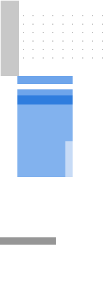
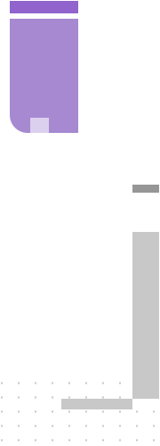

![]()
Fortinet Privileged Access Agent for Mozilla Firefox
This extension is designed to enhance browsing security by automatically filling in usernames and passwords for critical accounts accessed through FortiPAM. In accordance with your company's security policies, the extension may also enable video recording and keystroke logging within the FortiPAM environment. All websites accessed using this extension will be logged to your organization's designated FortiPAM instance. All collected data is securely stored within your FortiPAM instance and is protected according to your organization's security protocols. Access to this data is strictly limited to privileged accounts, and data retention is managed based on administrator-defined expiration settings.
By installing and/or continuing to use this extension, you acknowledge and expressly consent to the collection, processing, and transmission of this data to your FortiPAM instance. If you have any questions, concerns, or requests regarding this functionality, please contact your FortiPAM administrator.
